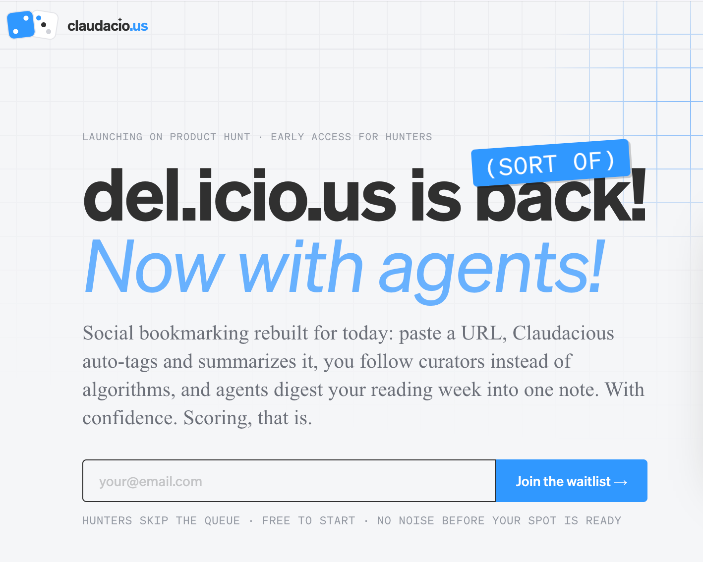

del.icio.us Was Right. It Was Just Twenty Years Too Early.
In 2003, del.icio.us proved that human curation beats algorithmic ranking. Then Yahoo bought it, the feed arrived, and we forgot. We didn't forget. We built Claudacious—social bookmarking with a real Claude reading every link you save. Here's everything that went into it.
The App That Was Always Missing
In 2003, Joshua Schachter built del.icio.us because he had a problem: too many links, not enough organization, and no way to share what he was collecting with people who might care. The solution was embarrassingly simple—a web page of bookmarks with tags. That was it. No algorithm, no feed, no engagement score. Just curated links with human-authored categories, visible to anyone who wanted to follow along.
It worked spectacularly. At its peak, del.icio.us was the pulse of the internet. You could watch what people were saving in real time. You could see which URLs were being saved by thousands of users simultaneously—a kind of collective intelligence the algorithmic feed era has never quite replicated. The network didn't show you what an algorithm thought you'd engage with. It showed you what actual humans, with actual taste, thought was worth keeping.
76%The palette is white ground, charcoal ink, one azure accent—proportioned roughly 76% / 16% / 8%Then Yahoo bought it. Then the web went social. Then the feed arrived. Then the algorithm. You know the rest.
Here's what I've believed for a while: del.icio.us was right. It was just twenty years too early—before the models existed to make saving a link more than a filing act, before the infrastructure existed to actually understand what you'd saved, before the tools existed to let your library talk back to you.
Raindrop came close. Pinboard kept the flame alive. Readwise solved the highlights problem. But nobody put it all together, and nobody brought Claude into the center of it.
So I built it. That's Claudacious.
What I Actually Built
150msMedian latency under 150msClaudacious is a social bookmarking platform where a real Claude reads every link you save.
That sentence sounds simple. It isn't. Let me break down what it actually means in practice.
When you paste a URL, Claude receives the raw page content and returns—in under a second—a structured enrichment: content type (article, podcast, video, paper), a folksonomy of tags, a one-line TL;DR, estimated reading time, and an honest confidence score. No manual filing. No drag-and-drop into folders. Paste the URL, and it's enriched, and it's filed.
DatabaseOrganized collection of structured information or dataIn the Lexicon →But the synchronous enrichment is just the surface. Underneath, a Cloudflare Worker is doing the slower work: fetching the full content, extracting clean Markdown, generating semantic embeddings, storing a permanent snapshot to R2, and writing everything back to the database. Your link is now archived. It's searchable. And because of a design decision I'll explain shortly, it may never need to be computed again—by anyone, ever.
MetadataInformation about information—patterns, timing, location, association dataIn the Lexicon →The social layer looks like del.icio.us. You have a public profile at your handle. You can follow curators whose taste you trust. You can see what's popular in the network this week. Tags work exactly the way Schachter envisioned them: folksonomy, not taxonomy. You're not selecting from a predefined list. You're labeling the world the way you see it, and those labels accumulate into a collective vocabulary that maps the contours of what everyone in the network actually cares about.
The collections layer looks like Raindrop. Stacks are visual groupings of bookmarks with cover images and public URLs. A good stack—"papers on language model interpretability" or "everything I've read about urban planning"—is a statement about your taste and your interests. Public stacks get RSS feeds and can be syndicated to fourteen platforms via Zernio. Your collection becomes a publication.
The reader layer looks like what Readwise Reader should have been if it had started with Markdown at the core: full distraction-free reading, inline and margin highlighting, a "read later" queue, and Claude-powered digest generation from your unread highlights. The highlights don't disappear into a void. They surface in your weekly digest. They come back when you ask Claude about them. They come back when you least expect to need them and most do.
And then there's the assistant layer—which is really the whole point.
AIArtificial IntelligenceIn the Lexicon →Claudacious is not a bookmarking tool with an AI feature bolted on. It's a Claude-backed assistant over your entire reading corpus. Three verbs describe what it does: chat (grounded Q&A over your saved pages, cited), act (natural language commands to create, move, tag, delete—always with a confirm step before anything destructive), and tidy (merge duplicate tags, surface broken links, propose fixes you actually review before they apply). Your library stops being an archive and starts being a thinking partner that has read everything you've read.
The Stack
Before the interesting decisions, the full technical inventory.
Railway hosts the Next.js 16 + Payload CMS v3 application and the Postgres database, SFO region. GitHub auto-deploys: push to main, Railway builds, deploys. That's the complete CI/CD pipeline. No Jenkins, no custom Docker orchestration, no ops ceremony.
Next.js 16 with the App Router and Turbopack handles the frontend and synchronous API routes. React 19 and Tailwind v4 handle styling and interactivity. Payload CMS v3 is mounted directly inside the Next app—not a separate service—handling the data layer, admin interface, auth, REST, and GraphQL. The cohabitation took some getting used to but it's elegant in operation: one deploy, one process, one Railway service.
Cloudflare Workers handles the asynchronous backbone: enrichment, embeddings, snapshots, syndication, and scheduled digests. Cloudflare Vectorize stores semantic embeddings (768-dim BAAI/BGE-base-en-v1.5 model) for semantic search. Cloudflare R2 holds full-page Markdown snapshots. The apex domain goes through Cloudflare's CDN—TLS 1.3 + HTTP/3 out of the box, managed robots.txt that blocks AI training crawlers (GPTBot, ClaudeBot, and friends).
Claude API is the intelligence layer. Structured output schema, claude-opus-4-8, sub-second enrichment. The app is built hosted-first—the Claude subscription is the user's subscription, not a shared server-side key—with BYOM (bring your own model) as a fallback seam via lib/llm.ts. The product doesn't hide that it runs on Claude. It leads with it. "Real Claude reads it" is the copy, not "AI-powered enrichment."
Resend handles magic-link auth emails and weekly Readwise-style digest emails. Zernio handles social syndication across fourteen platforms. No passwords, no OAuth social login—magic-link only. The simplicity is intentional.
Five services. No Kubernetes, no microservices, no ops team. Railway + Cloudflare + Claude + Resend + Zernio. Well-chosen managed infrastructure is worth more than elaborate orchestration.
The Decisions That Actually Mattered
Having the right stack doesn't tell you much. Every interesting project is interesting because of its decisions, not its dependencies. Here are the ones that shaped Claudacious.
I didn't use an extraction service.
The conventional approach to getting readable content out of a URL is to use an extraction service—Mercury, Diffbot, FiveFilters. You pay per call, they handle the edge cases, you ship faster. It's a reasonable choice.
I didn't do that. Instead, the Worker implements a five-tier extraction waterfall:
- Direct HTMLRewriter pass (cheap, fast, works on most articles)
- True-RSS parsing (publishers syndicate full article text in
<content:encoded>even when the page is paywalled—this surprises people every time, and it shouldn't) - Native LLM extraction: Claude reads raw HTML and returns clean Markdown, generalizing across any site without per-domain rules
- archive.ph (14-day cached snapshots for stubborn pages)
- Wayback Machine JSON API (the long tail)
The reason is architectural: LLMs generalize across any page without per-domain configuration. There's no list of site-specific rules to maintain. You add the LLM tier once and it handles every edge case, from academic preprints to paywalled news to opinionated CMSes. The stack does everything an extraction service does—and more—natively, on Workers, without an external dependency or a per-call fee. The decision saves money and preserves future flexibility in one move.
Cloudflare Browser Rendering is on the roadmap for the JavaScript-rendered pages that the HTMLRewriter pass can't handle. Stateful extraction agents (Durable Objects, multi-step for paywalls and paginated content) are after that. The waterfall gives me a working baseline while the advanced tiers come online.
Every link saved is a vote toward the canonical copy.
This is the decision I'm proudest of. It emerged from a deceptively simple question: what happens when two different users save the same URL?
The naive answer: you enrich it twice. Two API calls, two Worker invocations, two R2 snapshots, twice the storage. Scale to a million users and you're paying to re-analyze the same New York Times article thousands of times. The cost is real; the value is zero—you'd just be computing the same result repeatedly.
The actual answer: enrich it once, store a canonical copy, and every subsequent save points to that copy. Zero recomputation. Zero storage duplication. The first person to save a link funds the archive for everyone who comes after.
The implementation is a normalizedUrl field on every bookmark—stripped of www, trailing slashes, UTM parameters, and hashes, lowercased. Before enrichment, the Worker checks for an existing bookmark with the same normalizedUrl and enrichment status of "done." If found, it copies the enrichment metadata—the Markdown snapshot, the hero image, the tags, the synopsis, the reading time—and skips the full enrichment entirely.
I called this the Cybernetic Wayback Machine. It's not metaphorical—it's the actual data model. Del.icio.us's collective intelligence made concrete: many people save the same link, and the first archive is the canonical one. The work done for the first saver benefits every saver who follows. The network's value compounds without the network's cost compounding with it.
A side effect: fixing the normalization pass also revealed a latent bug in the extension save flow, where saves submitted without a fully authenticated user could create orphaned bookmarks with no owner. I fixed both in the same pass. Two problems, one architectural decision.
Integrations, not replacement.
The temptation when building a new tool is to build the last tool. Replace everything. Be the one dashboard. This temptation is almost always wrong, and I resisted it deliberately.
Claudacious integrates with second-brain tools—Raindrop, Readwise, Zotero, Notion, Mem, Obsidian—bidirectionally. It does not try to replace them. If you've spent three years building an Obsidian vault, you should be able to pull your Claudacious saves into it automatically. If your Readwise account has a decade of highlights, those should flow in. The interface is bridges, not walls.
The implementation uses a Connections collection in Payload with per-provider config, OAuth tokens, sync direction toggles (push/pull/both), and auto-minted HMAC webhook secrets. Watermarks track the last full sync for delta polling. Conflict detection in Zotero uses version vectors and HTTP 412 responses. Notion maps bookmark fields to database properties by property type. Obsidian uses a self-write guard—frontmatter id-keyed PATCH with a write lock—to prevent echo loops where the sync triggers itself.
I also shipped bulk import scripts: import-raindrop-csv.ts and import-feedly-opml.ts. Full fidelity—captures notes, excerpts, covers, highlights. Pre-loaded existing-bookmark cache for zero per-row lookups, parallel writes twenty-at-a-time. If you're migrating from Raindrop, the entire process takes minutes. Your history doesn't stay behind.
MCP is an access mode, not a feature.
The Claudacious MCP server lives at app/api/mcp/route.ts and gives Claude Desktop, Cursor, or any MCP-aware client direct access to your bookmark corpus. You can ask "what did I save about prompt caching last month?" from inside your IDE and get an answer grounded in your actual reading history. Your library, accessible wherever Claude is.
Here's the pricing insight this generated: MCP inference costs run on the user's subscription, not mine. When a user calls the MCP from Claude Desktop, the Claude API call is billed to their Anthropic account. I serve the data; I don't pay for the inference. This means I can bundle MCP access across all paid tiers—no premium paywall, no "MCP add-on." It becomes maximally sticky and has essentially zero marginal cost to me to offer.
The split between read (browse, search, retrieve) and act (create, modify, delete via tool-use) maps to trust levels and to tiers: Reader+ gets read access, Kitchen Sink gets act access. You wouldn't want a misconfigured client to start deleting bookmarks. The distinction makes that explicit in the product design.
Flat tiers, not metered AI.
The pricing decision was the hardest I had to make. The easy path is metered AI: charge per enrichment, per search, per query. Every token has a price and users pay for what they use. Clean economics, clear margins.
I rejected this for one specific reason: it creates hesitation. If every save costs something, you start pausing before saving. The whole product is about frictionless capture—"paste a URL, real Claude reads it, it's filed"—and hesitation is the enemy of that loop. The moment you make the user think about cost at the moment of saving, you've broken the core experience.
Four flat tiers instead: Free, Reader, Curator, House. Differentiated by surface area—integrations, sync, automation—not "more AI." AI usage has a monthly credit allowance that covers heavy normal use, plus a BYOK escape valve for power users who want to bring their own Anthropic key. My token cost stays predictable; users get the upgrade path they need without anxiety at the point of capture.
The Data Model
For the technically inclined, here's what's in the database.
Bookmarks are the core object: url, title, type, tags, synopsis, readingTime, highlights (relationship), savedBy (collective save count), snapshotKey (R2 path), embeddingId (Vectorize), enrichment (pending / done / failed), normalizedUrl, heroImage, markdown, markdownKey, note, favorite, remindAt, publishedAt, author.
Captures are the canonical forever-copy—one per normalizedUrl, shared across all users who saved that link. Fields include the snapshot, enrichment metadata, and firstArchivedAt. This is the Wayback layer.
Stacks are collections: visual groupings of bookmarks, publishable at /s/[slug], syndicatable via Zernio. Each has a cover image, generated via lib/cover.ts using cool-band gradients (never warm, never green—a design constraint enforced in the code).
Highlights hold selections within saved pages: position, text, margin notes. Exported as Markdown or synced to second brains. They survive the page they were made on.
Connections are the integration config: provider, externalId, syncRefs, webhookSecret, direction, lastFullSyncAt. One row per connected service per user.
Follows are social graph edges. Skins are theme definitions. Users have handles, API keys (for MCP and integrations), and relationships to everything else.
The schema is clean because I started with Payload's collection model and stayed disciplined. Every relationship is explicit. Nothing is stored as a JSON blob unless it genuinely has variable structure. The data holds together.
The Four Skins
I want to pause on the design system because it's doing more work than it appears to.
Claudacious ships with four themes: Modern (white ground, charcoal ink, one azure accent), Classic Mac OS (System 7 aesthetic with a menu bar), Windows 95 (Start taskbar, beveled buttons), and WinAmp (LCD panel, ten-band equalizer). Each is a pure CSS variable swap. The same DOM renders all four—no component branching, no conditional rendering, just --color-surface and --color-ink doing different things in different contexts.
The choice of nostalgia themes is not an accident. These are the interfaces that the web's original power users grew up with. The people who remember del.icio.us also remember WinAmp. The people who spent formative hours in System 7 understand spatial computing in their bones. The skins are a recognition—a wink that rewards curiosity. You find them in Settings; they're not on the landing page. They're easter eggs for people who poke around, which is exactly who I'm building for.
The brand mark is two dice: an azure two and a white three, rendered as a pure CSS component via DiceMark.tsx, theme-adaptive via --die-* tokens. Five. The odds in your favor. The pips are circles—always circles. This is a hard rule in the brand system. The Win95 skin is the sole exception, where blocky pips are period-correct. I made the exception explicit in the brand docs so it doesn't become a precedent.
The typography is Söhne for body and headings, Söhne Mono for meta labels, Times italic for editorial accents. The palette is white ground, charcoal ink, one azure accent—proportioned roughly 76% / 16% / 8%. No gradients, no second hue, no off-palette exceptions. The constraint is the design.
The brand voice was established first, before a line of code was written. Editorial, not promotional. The voice of a well-made independent magazine, not a SaaS pitch. When I write copy for Claudacious, I write it the way you'd write for Token Wisdom—short declarative sentences, philosophical framing before the feature description, the specific metaphor over the generic claim. The save flow copy doesn't say "AI-powered enrichment." It says "real Claude reads it."
The Gotchas
Build posts that skip the failures are marketing, not writing. Here are the ones that cost me real time.
Railway's devDependencies trap.
Railway runs npm ci --omit=dev during builds, which skips devDependencies. Normal behavior, well-documented. But the failure mode is sinister: if a build-time dependency (Tailwind, TypeScript, @types/*) lives in devDependencies, the Railway build fails silently and keeps serving the last successful image. No error page. No failed-deployment alert that surfaces clearly. You push code, the deploy "succeeds," and you get the version from three commits ago while wondering why your changes aren't showing up.
I discovered this weeks into the project when a Node modules cache layer evicted and the stale image finally stopped serving. Root cause: @tailwindcss/postcss was in devDependencies. The fix is one word. Finding the root cause was a multi-session investigation.
Lesson: move all build-time tooling to dependencies on any platform running npm ci --omit=dev. Verify with a fresh deploy after any package.json restructuring. Trust the deploy status less than you trust the actual page response.
Payload requires types before building.
Payload CMS v3 generates TypeScript types from your collection schemas. The build script must run payload generate:types before next build, or you get type errors mid-build. Obvious in retrospect—generated types are source artifacts, not side effects—but it burned me once when I had the steps reversed. The script now chains them: payload generate:types && next build. If you're adding Payload to an existing Next.js project, this is the first thing to get right.
Production schema drift.
When I added Stripe subscription fields—stripe_customer_id, plan—to the Users schema, the dev database updated automatically via schema push. The production database, seeded earlier and never migrated, didn't have those columns. Any query that selected a full user row returned a 500. I caught this on the /explore route, patched it by scoping the query to non-billing fields, and flagged the root fix as a deferred migration.
The lesson is standard: schema push works beautifully in dev; production needs real migrations. Payload doesn't have a migration system in this version, which means schema drift between environments is a manual-tracking problem. I track it. It's not elegant, but it's honest.
Local DNS cache lies.
During domain setup, local DNS was returning the Namecheap parking IP even after I'd delegated nameservers to Cloudflare and configured the records correctly. The record was live and accurate from external resolvers. My machine was getting a stale cache response. Verification requires an explicit query: dig claudacio.us @1.1.1.1. Always verify DNS changes from a known-clean resolver. Your local cache is the last thing to know when your DNS changes, and the first thing you think to check.
The Browser Extension and the Forever Copy
The browser extension deserves its own mention because it completes a loop that the web app starts.
The extension is a Raindrop-parity clipper: Markdown capture via Readability and Turndown running in the extension itself (no server round-trip for the capture), IndexedDB staging library for offline saves, note and favorite fields, tag entry, stack selection, batch save mode, and highlight capture. Deep-links work via /?add=<url>—a third-party site can link to Claudacious with a URL pre-filled, and the add flow opens ready to go.
The Reader—at /b/[id]—is what that captured Markdown becomes. It's a "forever copy": full distraction-free rendering with a skim rail, a typography and theme panel, and reading mode controls. The Markdown is stored as a field for short content or in R2 for long content, with the server choosing automatically based on length. The Reader is the payoff for all the extraction work: every link you save becomes a permanent, readable, searchable document that lives in your library regardless of what happens to the original URL. Paywalls, link rot, site shutdowns—none of it touches your copy.
The Wayback Machine archives the internet collectively. Claudacious archives your internet personally. And because of the Cybernetic Wayback dedup, the two aren't entirely separate.
The Writers Room (What's Coming)
There's a feature on the feat/writers-room branch that I didn't ship in the initial release because the in-app UI wasn't ready. The backend is built. The concept is worth explaining because it represents where the whole thing is going.
The Writers Room is an agentic editorial panel: four Claude-backed personas—an editor, a fact-checker, a line-editor, and a curator—that you can convene around any piece of writing in your library. They review it, argue with each other, and produce CriticMarkup annotations for local review in Roughdraft. They propose; they never write directly. The changes come back as suggestions with tracked deletions, insertions, and comments—standard CriticMarkup syntax—that you accept or reject in your own editor.
This is the propose-only posture applied to writing assistance. The assistant is never destructive. It never writes to your library without explicit confirmation. It drafts, suggests, highlights—and then hands control back to you. The "tidy" feature works the same way: here are the duplicate tags I found, here's what I'd merge them into, confirm or cancel. The autonomy is yours.
The Bigger Picture
Claudacious sits in a constellation of five projects that share a Payload CMS backbone and a single account.
Claudacious is the assistant over your second brain—ingests all corpus, acts, writes back. Elenchi is a belief refutation engine—fire a refutation brigade on any claim, get back a structured adversarial response. SwarmField is a prediction engine—simulate the collective response to any idea before you publish it. Token Wisdom is this publication—267 posts, a corpus of curated links and essays, agents that can draft from it. Knowware Aperiodic is an academic journal—A.R.C. Institute, formal register, preprints.
The pipeline: Belief → Elenchi (refutation) → Token Wisdom (essay) → SwarmField (external pressure test) → Knowware (research). Claudacious is the connective tissue—the only surface with eyes on the full corpus across all five domains. If Elenchi produces a refutation document and SwarmField runs a simulation, those outputs eventually land in Claudacious's Vectorize index and become searchable alongside everything else you've read. The essay informs the bookmark. The bookmark informs the essay.
The bookmarking layer is the obvious entry point. It's what people immediately understand and know how to use. But the ambition is a corpus-aware assistant that can answer questions across your entire intellectual history: every link you saved, every paper you annotated, every belief you had stress-tested, every simulation you ran. The library, made conversational. Your reading life, made queryable.
This is the "quiet web" thesis made operational. Before feeds and algorithms, the web was a set of places you kept track of. You maintained lists. You curated. You shared what you'd found with people who trusted your judgment. The infrastructure of the early web made this laborious—it required discipline and ritual. The infrastructure of 2026—Workers, Vectorize, R2, Claude—makes it effortless. The old values are intact. The tools are just better now.
Use the new tools in service of the old values. That was always the plan.
The Speed of the Build
People keep asking how quickly this happened. The honest answer is: very quickly, and the speed itself was interesting to experience.
Building with Claude Code changes the shape of a project. The research phase and the implementation phase blur together. You're not blocked on deciding which extraction library to use while you context-switch to look it up—you're discussing the tradeoffs with Claude and writing the code at the same time. Architectural decisions get pressure-tested in conversation before they get pressure-tested in production. The handoff document writes itself because the context is right there in the session.
This isn't a post about Claude Code as a build tool—that's a different essay. But it's relevant context: Claudacious exists partly because the tools existed to build it in the time I had, and alone at that. The five-tier extraction waterfall. The bidirectional sync connectors for six second-brain platforms. The MCP server. The four nostalgia skins. The Cybernetic Wayback dedup. The Writers Room backend. These are things that would have taken months to scope and implement in a previous era of development. They took weeks.
Speed has a quality of its own. When you can ship an idea before you've had time to talk yourself out of it, you ship more ideas. Some of them are bad. But the good ones make it to production while they're still exciting—before the committee forms, before the scope bloat sets in, before the thing that seemed obvious starts to seem risky.
The best version of Claudacious is the one that exists. The second-best version is still being designed by teams that can't move this fast.
What Is Live Right Now
Claudacious is live at claudacio.us. TLS 1.3 + HTTP/3. All routes return 200. Median latency under 150ms. OG and Twitter cards work. The sitemap is live. The security headers are set.
Seven demo curators are seeded. Sixteen bookmarks. Twelve stacks. Log in as a demo curator without creating an account. See what the network feels like before you commit to it.
AI-PoweredSystems or tools enhanced by artificial intelligence capabilities.In the Lexicon →Claude enrichment is currently running in offline mode in production—the real-time tagging and summarization is there in the code and works in local dev, but the production API key isn't set yet. Setting it is a one-environment-variable operation. It's coming.
The Vectorize index needs one wrangler vectorize create command before semantic search goes live. The Worker is deployed; the index is the last step. Semantic search—"find everything I've saved about transformers"—is days away, not weeks.
The Stripe wiring is the last piece of the pricing tier. The tiers are designed, the page is live, the checkout is next.
An Invitation
If you're the kind of person who reads a post this long about a bookmarking app, you're probably the kind of person I built this for.
The people who remember del.icio.us fondly—not as nostalgia, but as a proof of concept for something the feed era abandoned. The people who still maintain a Pinboard account because they believe in owning their reading history. The people who care about the difference between curation and consumption, between a library and a slot machine. The people who believe that tagging a link is a small public act of taste, and that a library of such acts, accumulated over years and made searchable by a language model, is worth more than any algorithm's recommendations.
The internet never stopped producing things worth saving. It just made it harder to save them well.
Paste a URL. Real Claude reads it. The rest follows.
Free to start. Keep one link and the commonplace book begins—yours to export anytime.

🌶️ Courtesy of your friendly neighborhood, Khayyam
Khayyam Wakil is a builder, curator, and researcher working at the intersection of intelligence infrastructure, human curation, and the social web. Claudacious is his current project. Token Wisdom is his ongoing publication. The rest is still being written.